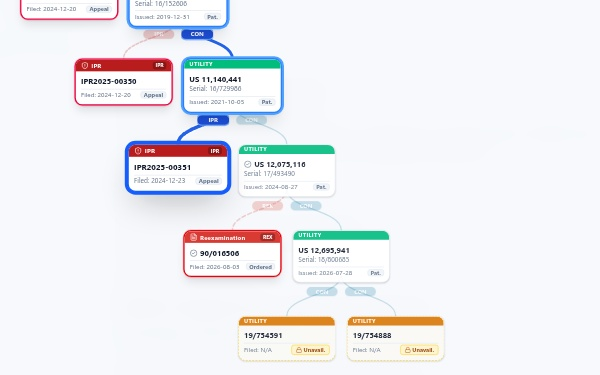
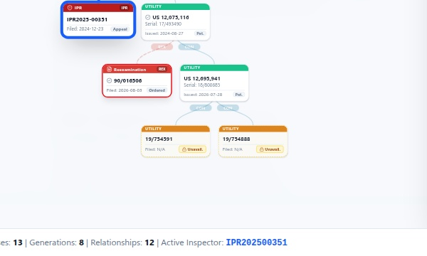
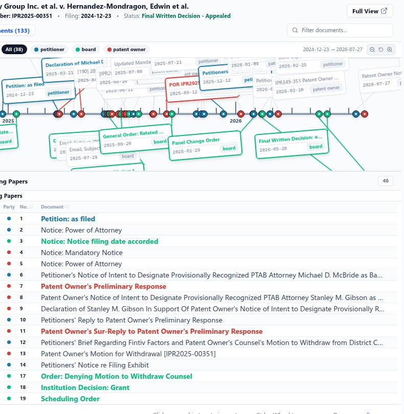
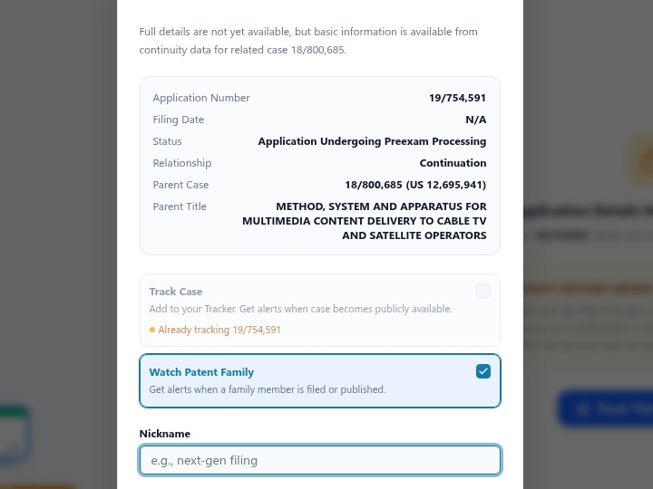
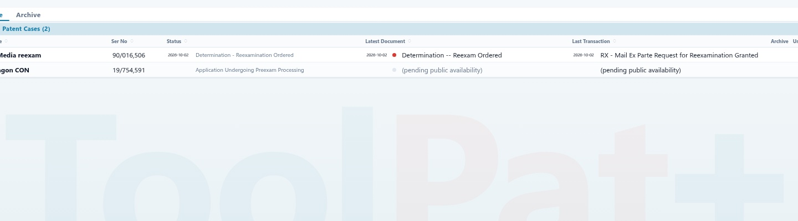

Patents & applications
11,140,441
Search patents, PTAB trials, reexaminations, and court litigation. Explore related proceedings, read the record, and track new developments in one place.
Patent and application numbers, PTAB trial numbers, reexam control numbers, parties, or structured queries. ToolPat+ figures out what you mean and takes you straight to the case.
11,140,441

IPR2025-00351

90/016,506
Party or docket no.
The Family Navigator lays out parents, continuations, PTAB trials and reexams as one connected tree. Click any case and its record opens alongside.
 1
2
3
4
1
2
3
4

IPRs sit directly adjacent to the challenged patent so you immediately see proceeding status and challenged claims in context.

Identify pending continuations from public continuity data. Track them before their full records become publicly available.

Inspect timeline flags, download file history papers, and review status without navigating away or losing your place.
Every case has a visual timeline. Hover an event, pick the paper, and read it immediately, without a separate download or a trip to another site.


Track any case with one click and a nickname you'll recognize. Your tracker shows current status, the latest document and the latest transaction, and email alerts tell you when something changes.

Assign a nickname you'll remember and choose email alert preferences for new documents and transactions.

Your dashboard tracks current status, latest document, and latest transaction date at a glance.
Switch between PTAB and reexamination feeds to spot what matters, then open the full record in one click.


New IPR and PGR petitions, plus new ex parte reexam requests.
Institution decisions, final written decisions, reexam orders and determinations.
The papers that matter, not the procedural noise.
Feeds refresh about every 10 minutes during business hours, 30 minutes off-hours and 60 minutes on weekends.
Create a free account to explore ToolPat with your own cases. Usage limits apply.
Overview of the core ToolPat+ workflow: search to connected family tree, document inspection, and case tracking.